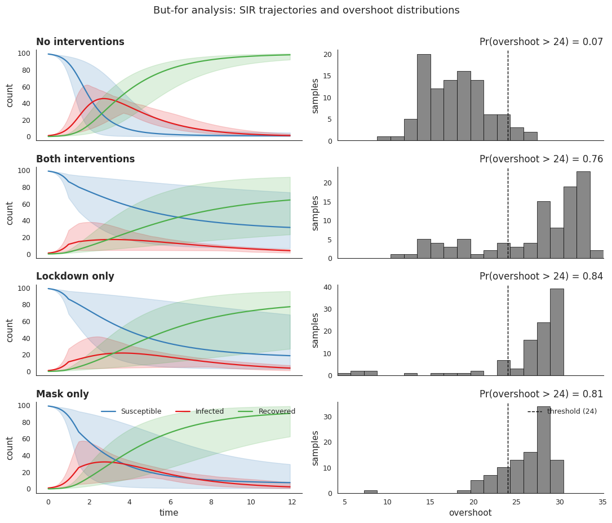
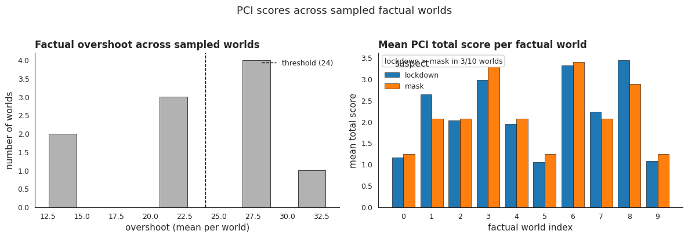
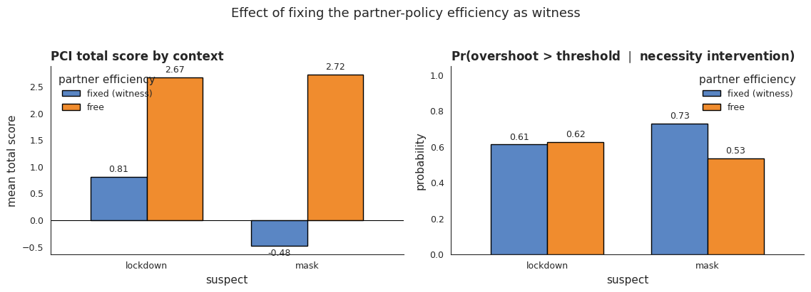

PCI on a dynamical SIR model with policies
This notebook applies proximate causal influence (PCI) to a Bayesian SIR epidemiological model with two interacting non-pharmaceutical policies, lockdown and mask-wearing. The setup mirrors the chirho tutorial on explainable reasoning in dynamical systems, which uses chirho’s SearchForExplanation handler to compute classical actual-cause probabilities. We keep the same model and the same query, but replace the explanatory
machinery with the PCI thin-search sampler from pci.explanation, which produces a continuous responsibility score that decomposes into necessity and sufficiency contributions.
We will see that PCI recovers the qualitative finding of the chirho tutorial — lockdown is the dominant cause of excessive overshoot, despite both policies appearing roughly symmetric under but-for analysis — and that PCI extends naturally to dynamical settings with continuous outcomes.
[1]:
import os
import sys
from itertools import chain, combinations
import matplotlib.pyplot as plt
import pandas as pd
import pyro
import seaborn as sns
import torch
from chirho.interventional.handlers import do
from chirho.observational.handlers import condition
from IPython.display import Image, display
smoke_test = "CI" in os.environ
import os
import pickle
from time import time
import pyro.distributions as dist
from loguru import logger
from pci.explanation.regime import condition_on_interventional_regime
from pci.explanation.scores import abs_diff_score
from pci.explanation.searchable import SearchableModel
from pci.explanation.thin_search import ThinSearchSampler
from pci.tools.find_root import find_repo_root
root = find_repo_root()
results_dir = os.path.join(root, "docs/source/dynamical_benchmark")
print(f"Results will be saved to {results_dir}")
# first allow debug for illustration
logger.remove()
logger.add(sys.stderr, level="DEBUG")
# TODO clean up for CI etc.
runtime_limit = 0.25 if smoke_test else 60 # in minutes
num_worlds_at_site = 2 if smoke_test else 10 #
runtime_limit_seconds = runtime_limit * 60
# change to True if in fact intending to run the experiments anew
fresh_run = True
import numbers
import os
from typing import Tuple, TypeVar, Union, Optional, Callable
import math
import matplotlib.pyplot as plt
import pandas as pd
import pyro.distributions as dist
from pyro.distributions import constraints
import seaborn as sns
import torch
from pyro.infer import Predictive
import pyro
from chirho.counterfactual.handlers.counterfactual import MultiWorldCounterfactual
from chirho.dynamical.handlers.interruption import StaticEvent
from chirho.dynamical.handlers.solver import TorchDiffEq
from chirho.dynamical.handlers.trajectory import LogTrajectory
from chirho.dynamical.ops import Dynamics, State, on, simulate
from chirho.explainable.handlers import SearchForExplanation
from chirho.explainable.handlers.components import ExtractSupports
from chirho.indexed.ops import IndexSet, gather
from chirho.interventional.ops import Intervention, intervene
from chirho.observational.handlers import condition
R = Union[numbers.Real, torch.Tensor]
S = TypeVar("S")
T = TypeVar("T")
sns.set_style("white")
seed = 123
pyro.clear_param_store()
pyro.set_rng_seed(seed)
# Paper-grade matplotlib defaults
plt.rcParams.update({
"font.size": 11,
"axes.titlesize": 12,
"axes.labelsize": 11,
"legend.fontsize": 9,
"xtick.labelsize": 9,
"ytick.labelsize": 9,
"savefig.dpi": 160,
"savefig.bbox": "tight",
})
fig_dir = os.path.join(root, "docs/source/sir_benchmark")
Results will be saved to /home/rafal/s76projects/explainable_paper/docs/source/dynamical_benchmark
SIR model with policies
We use the standard SIR dynamics
with a parameterised variant SIRDynamicsPolicies that introduces an intervention strength \(l \in [0, 1]\), modulating the transmission rate to \((1 - l)\beta_0\). With no policies active the model reduces to the unparameterised dynamics.
Assumptions. All dynamics are deterministic; stochasticity enters only through priors over \(\beta\) and \(\gamma\). The structural model is taken as correctly specified, and no unobserved confounders are assumed between parameters.
Outcome and threshold. The outcome is the overshoot — the peak-to-final \(S\) gap of the simulated trajectory. Without interventions on a 100-person population the deterministic overshoot is \(\approx 15.1\), well below the \(24\)-person threshold we treat as the undesirable outcome.
[2]:
# dS = - beta . SI
# dI = beta * SI - gamma * I
# dR = gamma * I
class SIRDynamics(pyro.nn.PyroModule):
def __init__(self, beta, gamma):
super().__init__()
self.beta = beta
self.gamma = gamma
def forward(self, X: State[torch.Tensor]):
dX: State[torch.Tensor] = dict()
dX["S"] = -self.beta * X["S"] * X["I"]
dX["I"] = self.beta * X["S"] * X["I"] - self.gamma * X["I"]
dX["R"] = self.gamma * X["I"]
return dX
# l is a parameter describing the strength of the intervening policies
# it is a value between 0 and 1, and (1-l) is the fraction of the original unintervened beta
class SIRDynamicsPolicies(SIRDynamics):
def __init__(self, beta0, gamma):
super().__init__(beta0, gamma)
self.beta0 = beta0
def forward(self, X: State[torch.Tensor]):
self.beta = (1 - X["l"]) * self.beta0
dX = super().forward(X)
dX["l"] = torch.zeros_like(X["l"])
return dX
[3]:
# Computing overshoot in a simple SIR model without interventions
# note it's below the desired threshold
total_population = 100
init_state = dict(S=torch.tensor(99.0), I=torch.tensor(1.0), R=torch.tensor(0.0))
assert init_state["S"] + init_state["I"] + init_state["R"] == total_population
start_time = torch.tensor(0.0)
end_time = torch.tensor(12.0)
step_size = torch.tensor(0.1)
logging_times = torch.arange(start_time, end_time, step_size)
init_state_lockdown = dict(**init_state, l=torch.tensor(0.0))
# We now simulate from the SIR model
beta_true = torch.tensor([0.03])
gamma_true = torch.tensor([0.5])
sir_true = SIRDynamics(beta_true, gamma_true)
with TorchDiffEq(), LogTrajectory(logging_times) as lt:
simulate(sir_true, init_state, start_time, end_time)
sir_true_traj = lt.trajectory
def get_overshoot(trajectory):
t_max = torch.argmax(trajectory["I"].squeeze())
S_peak = torch.max(trajectory["S"].squeeze()[t_max]) / total_population
S_final = trajectory["S"].squeeze()[-1] / total_population
return (S_peak - S_final).item()
print(get_overshoot(sir_true_traj))
0.15116800367832184
Bayesian SIR with priors
We add Beta priors: \(\beta \sim \mathrm{Beta}(18, 600)\) and \(\gamma \sim \mathrm{Beta}(1600, 1600)\), centred near \(0.03\) and \(0.5\) respectively.
Policies and asymmetric efficiencies
Two policies, each with prior probability \(1/2\), can be enacted: lockdown at \(t=1\) and masking at \(t=1.5\). Their efficiencies interact asymmetrically:
Lockdown alone has efficiency \(0.6\).
Masking efficiency depends on lockdown: \(0.1\) under lockdown (fewer interactions for masks to block) versus \(0.45\) on its own.
The joint efficiency is the clamped sum, capped at \(0.95\).
Interventions are dispatched via MaskedStaticIntervention to avoid trace conflicts. overshoot_query reads the peak-to-final \(S\) gap from the logged trajectory and flags \(\mathrm{os\_too\_high} = \mathbb{1}[\mathrm{overshoot} > 24]\).
[4]:
# Defining a Bayesian SIR model where we have priors over beta and gamma distributions
def bayesian_sir(base_model=SIRDynamics) -> Dynamics[torch.Tensor]:
beta = pyro.sample("beta", dist.Beta(18, 600))
gamma = pyro.sample("gamma", dist.Beta(1600, 1600))
sir = base_model(beta, gamma)
return sir
def simulated_bayesian_sir(
init_state, start_time, logging_times, base_model=SIRDynamics
) -> State[torch.Tensor]:
sir = bayesian_sir(base_model)
with TorchDiffEq(), LogTrajectory(logging_times, is_traced=True) as lt:
simulate(sir, init_state, start_time, logging_times[-1])
return lt.trajectory
[5]:
# a utility function
# allowing for interventions on a dynamical system
# within another model
# to avoid conflicts arising from repeated sites in the trace
def MaskedStaticIntervention(time: R, intervention: Intervention[State[T]]):
@on(StaticEvent(time))
def callback(
dynamics: Dynamics[T], state: State[T]
) -> Tuple[Dynamics[T], State[T]]:
with pyro.poutine.block():
return dynamics, intervene(state, intervention)
return callback
[6]:
# Defining the policy model
overshoot_threshold = 24
lockdown_time = torch.tensor(1.0)
mask_time = torch.tensor(1.5)
def policy_model() -> State[torch.Tensor]:
lockdown = pyro.sample("lockdown", dist.Bernoulli(torch.tensor(0.5)))
mask = pyro.sample("mask", dist.Bernoulli(torch.tensor(0.5)))
lockdown_efficiency = pyro.deterministic(
"lockdown_efficiency", torch.tensor(0.6) * lockdown, event_dim=0
)
mask_efficiency = pyro.deterministic(
"mask_efficiency", (0.1 * lockdown + 0.45 * (1 - lockdown)) * mask, event_dim=0
)
joint_efficiency = pyro.deterministic(
"joint_efficiency",
torch.clamp(lockdown_efficiency + mask_efficiency, 0, 0.95),
event_dim=0,
)
lockdown_sir = bayesian_sir(SIRDynamicsPolicies)
with LogTrajectory(logging_times, is_traced=True) as lt:
with TorchDiffEq():
with MaskedStaticIntervention(lockdown_time, dict(l=lockdown_efficiency)):
with MaskedStaticIntervention(mask_time, dict(l=joint_efficiency)):
simulate(
lockdown_sir, init_state_lockdown, start_time, logging_times[-1]
)
return lt.trajectory
def overshoot_query(trajectory: State[torch.Tensor]) -> Tuple[torch.Tensor, torch.Tensor]:
t_max = torch.max(trajectory["I"], dim=-1).indices
S_peaks = pyro.ops.indexing.Vindex(trajectory["S"])[..., t_max]
overshoot = pyro.deterministic(
"overshoot", S_peaks - trajectory["S"][..., -1], event_dim=0
)
os_too_high = pyro.deterministic(
"os_too_high",
(overshoot > overshoot_threshold).clone().detach().float(),
event_dim=0,
)
return overshoot, os_too_high
def overshoot_model():
trajectory = policy_model()
return overshoot_query(trajectory)
But-for analysis
We first run the classical but-for query: condition on each pair of policy decisions ((0,0), (1,1), (0,1), (1,0)) and draw \(100\) predictives from each. Each scenario yields a marginal distribution over overshoot, summarised by its mean and by \(\Pr(\mathrm{overshoot} > 24)\).
[7]:
num_samples = 100
# conditioning (as opposed to intervening) is sufficient for
# propagating the changes, as the decisions are upstream from ds
# no interventions
overshoot_model_none = condition(
overshoot_model, {"lockdown": torch.tensor(0.0), "mask": torch.tensor(0.0)}
)
unintervened_predictive = Predictive(
overshoot_model_none, num_samples=num_samples, parallel=True
)
unintervened_samples = unintervened_predictive()
# both interventions
overshoot_model_all = condition(
overshoot_model, {"lockdown": torch.tensor(1.0), "mask": torch.tensor(1.0)}
)
intervened_predictive = Predictive(
overshoot_model_all, num_samples=num_samples, parallel=True
)
intervened_samples = intervened_predictive()
overshoot_model_mask = condition(
overshoot_model, {"lockdown": torch.tensor(0.0), "mask": torch.tensor(1.0)}
)
mask_predictive = Predictive(overshoot_model_mask, num_samples=num_samples, parallel=True)
mask_samples = mask_predictive()
overshoot_model_lockdown = condition(
overshoot_model, {"lockdown": torch.tensor(1.0), "mask": torch.tensor(0.0)}
)
lockdown_predictive = Predictive(
overshoot_model_lockdown, num_samples=num_samples, parallel=True
)
lockdown_samples = lockdown_predictive()
predictive = Predictive(overshoot_model, num_samples=num_samples, parallel=True)
samples = predictive()
print("Variables in the model:", samples.keys())
Variables in the model: dict_keys(['lockdown', 'mask', 'beta', 'gamma', 'lockdown_efficiency', 'mask_efficiency', 'joint_efficiency', 'S', 'I', 'R', 'l', 'overshoot', 'os_too_high'])
[8]:
# Figure 1: but-for analysis — SIR trajectories and overshoot distributions
# 4 scenarios x 2 panels (trajectory on left, overshoot histogram on right).
# The "stochastic" prior-mixture case is dropped from this figure for clarity.
# SIR palette (color-blind safe).
sir_colors = {"S": "#377eb8", "I": "#e41a1c", "R": "#4daf4a"}
def _add_traj(preds, ax, color, label):
sns.lineplot(
x=logging_times,
y=preds.mean(dim=0).squeeze().tolist(),
ax=ax,
label=label,
color=color,
linewidth=1.6,
)
ax.fill_between(
logging_times,
torch.quantile(preds, 0.025, dim=0).squeeze(),
torch.quantile(preds, 0.975, dim=0).squeeze(),
alpha=0.18,
color=color,
)
scenarios = [
("No Interventions", unintervened_samples),
("Both Interventions", intervened_samples),
("Lockdown Only", lockdown_samples),
("Mask Only", mask_samples),
]
n_rows = len(scenarios)
fig, axs = plt.subplots(n_rows, 2, figsize=(11, 2.3 * n_rows), sharex="col")
# common overshoot x-range across the histogram column
all_overshoot = torch.cat(
[s["overshoot"].squeeze().flatten() for _, s in scenarios]
).detach().cpu().numpy()
hist_lo, hist_hi = float(all_overshoot.min()), float(all_overshoot.max())
hist_pad = 0.05 * (hist_hi - hist_lo + 1e-9)
hist_lo -= hist_pad
hist_hi += hist_pad
for i, (label, samples_i) in enumerate(scenarios):
ax_traj = axs[i, 0]
_add_traj(samples_i["S"], ax_traj, sir_colors["S"], "Susceptible")
_add_traj(samples_i["I"], ax_traj, sir_colors["I"], "Infected")
_add_traj(samples_i["R"], ax_traj, sir_colors["R"], "Recovered")
ax_traj.set_title(label, loc="left", fontweight="bold")
ax_traj.set_ylabel("count")
if i < n_rows - 1 and ax_traj.get_legend() is not None:
ax_traj.get_legend().remove()
else:
ax_traj.legend(loc="upper right", ncol=3, frameon=False)
if i == n_rows - 1:
ax_traj.set_xlabel("time")
ax_hist = axs[i, 1]
o = samples_i["overshoot"].squeeze().detach().cpu().numpy()
pr_too_high = float(samples_i["os_too_high"].squeeze().float().mean().item())
ax_hist.hist(o, bins=20, range=(hist_lo, hist_hi), color="#888888",
edgecolor="black", linewidth=0.5)
ax_hist.axvline(overshoot_threshold, color="black", linestyle="--", linewidth=1.0,
label=f"threshold ({overshoot_threshold})")
ax_hist.set_title(
f"Pr(Overshoot > {overshoot_threshold}) = {pr_too_high:.2f}",
loc="right",
)
ax_hist.set_xlim(hist_lo, hist_hi)
ax_hist.set_ylabel("samples")
if i == n_rows - 1:
ax_hist.set_xlabel("overshoot")
ax_hist.legend(loc="upper right", frameon=False)
fig.suptitle(
"But-For Analysis: SIR Trajectories And Overshoot Distributions",
fontsize=13,
y=1.005,
)
plt.tight_layout()
sns.despine()
if not smoke_test:
os.makedirs(fig_dir, exist_ok=True)
fig.savefig(os.path.join(fig_dir, "sir_butfor.png"))
print(f"Saved {os.path.join(fig_dir, 'sir_butfor.png')}")
Saved /home/rafal/s76projects/explainable_paper/docs/source/sir_benchmark/sir_butfor.png

The four panels reveal a counter-intuitive pattern. With no intervention, \(\Pr(\mathrm{overshoot} > 24) \approx 0.07\) and the mean overshoot is \(17.9\). Both policies together push the probability to \(\approx 0.67\). But applying either policy alone produces a higher probability than the joint case: lockdown-only gives \(\approx 0.82\) and mask-only \(\approx 0.87\). Stochastic policies (the prior-mixture case) sit in between at \(\approx 0.61\).
The mechanism is the asymmetric joint efficiency. Combining the two policies caps the transmission reduction at \(0.95\), but neither policy alone reaches that cap, and mask-only is comparatively weak — yet under lockdown, masking’s contribution is dampened to \(0.1\), so adding masking to lockdown only marginally improves on lockdown-alone, and the joint case may underperform mask-only depending on prior draws of \(\beta, \gamma\).
But-for analysis cannot disentangle this kind of context dependence — it treats each policy as a binary cause and reports an aggregate effect, with no way to express that lockdown’s causal contribution depends on whether masking is in force. That is the gap PCI fills.
Causal explanations using PCI thin search
Where the chirho tutorial uses SearchForExplanation to estimate the probability that a candidate cause is the actual cause, we use the PCI thin-search sampler. Both procedures explore the same family of interventional regimes — joint assignments of antecedents (where to intervene), witnesses (where to condition on factual values), and outcome — but PCI scores each regime with a continuous \(|y^* - y_{\mathrm{nec}}| - |y^* - y_{\mathrm{suff}}|\) statistic and averages across regimes.
The \(\mathrm{nec}\) term rewards regimes where removing the suspect moves the outcome away from the factual value \(y^*\); the \(\mathrm{suff}\) term rewards regimes where fixing the suspect at its factual value keeps the outcome close to \(y^*\).
The suspects are lockdown and mask, with lockdown_efficiency, mask_efficiency and joint_efficiency as additional sites of interest the sampler may use as witnesses. The factual world fixes both policies on (\(\mathrm{lockdown}=1, \mathrm{mask}=1\)), with \(y^* = \mathrm{overshoot}\) read from the same trajectory. For each suspect the sampler draws \(2{,}500\) regimes that intervene on that suspect as antecedent while leaving it out of the witness set, and we score the resulting sufficiency/necessity outcome pair against \(y^*\).
Because the factual world is the both-policies-on scenario, \(y^\star \approx 33\) for this seed and these fixed efficiencies — well above the \(24\)-overshoot threshold. Most sampled regimes intervene to remove at least one policy, so the necessity- and sufficiency-side overshoot distributions in the figures below sit between the threshold and \(y^\star\) (typically in the high-\(20\)s). The cross-hair at \(y^\star\) is therefore not a “central” reference but the high-overshoot anchor against which removal- and retention-style interventions are scored.
[9]:
def searchable_overshoot_model(
kwargs_iterable=[
{"observations_dict": None, "n_size": 1},
dict(),
dict(),
]
):
batch_size = int(kwargs_iterable[0]["n_size"])
observations_dict = kwargs_iterable[0].get("observations_dict", None)
obs_data = None
if observations_dict is not None:
obs_data = observations_dict.get("continuous", {}) | observations_dict.get(
"categorical", {}
)
# ensure tensors have shape [..., batch, padding, event] = [batch, 1, 1]
def _expand_scalar(x: torch.Tensor) -> torch.Tensor:
return x.expand(batch_size, 1, 1)
init_state_batched = {
"S": _expand_scalar(init_state["S"]),
"I": _expand_scalar(init_state["I"]),
"R": _expand_scalar(init_state["R"]),
"l": _expand_scalar(torch.tensor(0.0)),
}
if obs_data is None:
_condition_cm = None
else:
_condition_cm = condition(data=obs_data)
if _condition_cm is None:
# sample categorical suspects
logits01 = torch.ones(batch_size, 1, 1, 2)
lockdown = pyro.sample("lockdown", dist.Categorical(logits=logits01))
mask = pyro.sample("mask", dist.Categorical(logits=logits01))
lockdown_f = lockdown.float()
mask_f = mask.float()
lockdown_efficiency = pyro.deterministic(
"lockdown_efficiency", torch.tensor(0.6) * lockdown_f, event_dim=0
)
mask_efficiency = pyro.deterministic(
"mask_efficiency",
(0.1 * lockdown_f + 0.45 * (1 - lockdown_f)) * mask_f,
event_dim=0,
)
joint_efficiency = pyro.deterministic(
"joint_efficiency",
torch.clamp(lockdown_efficiency + mask_efficiency, 0, 0.95),
event_dim=0,
)
lockdown_sir = bayesian_sir(SIRDynamicsPolicies)
with LogTrajectory(logging_times, is_traced=True) as lt:
with TorchDiffEq():
with MaskedStaticIntervention(lockdown_time, dict(l=lockdown_efficiency)):
with MaskedStaticIntervention(mask_time, dict(l=joint_efficiency)):
simulate(
lockdown_sir,
init_state_batched,
start_time,
logging_times[-1],
)
trajectory = lt.trajectory
return overshoot_query(trajectory)
else:
with _condition_cm:
# sample categorical suspects
logits01 = torch.ones(batch_size, 1, 1, 2)
lockdown = pyro.sample("lockdown", dist.Categorical(logits=logits01))
mask = pyro.sample("mask", dist.Categorical(logits=logits01))
lockdown_f = lockdown.float()
mask_f = mask.float()
lockdown_efficiency = pyro.deterministic(
"lockdown_efficiency", torch.tensor(0.6) * lockdown_f, event_dim=0
)
mask_efficiency = pyro.deterministic(
"mask_efficiency",
(0.1 * lockdown_f + 0.45 * (1 - lockdown_f)) * mask_f,
event_dim=0,
)
joint_efficiency = pyro.deterministic(
"joint_efficiency",
torch.clamp(lockdown_efficiency + mask_efficiency, 0, 0.95),
event_dim=0,
)
lockdown_sir = bayesian_sir(SIRDynamicsPolicies)
with LogTrajectory(logging_times, is_traced=True) as lt:
with TorchDiffEq():
with MaskedStaticIntervention(
lockdown_time, dict(l=lockdown_efficiency)
):
with MaskedStaticIntervention(mask_time, dict(l=joint_efficiency)):
simulate(
lockdown_sir,
init_state_batched,
start_time,
logging_times[-1],
)
trajectory = lt.trajectory
return overshoot_query(trajectory)
suspects = ["lockdown", "mask"]
sites_of_interest = suspects + ["lockdown_efficiency", "mask_efficiency", "joint_efficiency"]
searchable_model = SearchableModel(
structured_model=searchable_overshoot_model,
sites_of_interest=sites_of_interest,
suspects=suspects,
outcome_variable="overshoot",
)
# a single factual world (batch_size = 1)
# NOTE: if you edit obs_dict, also flip fresh_run=True (or change seed) so the
# cache is not silently reused.
obs_dict = {
"continuous": {
"lockdown_efficiency": torch.tensor([[[0.6]]]),
"mask_efficiency": torch.tensor([[[0.1]]]),
"joint_efficiency": torch.tensor([[[0.7]]]),
},
"categorical": {
"lockdown": torch.tensor([[[1]]], dtype=torch.long),
"mask": torch.tensor([[[1]]], dtype=torch.long),
},
}
sampler = ThinSearchSampler(
structured_model=searchable_model,
conditioned_alternatives=True,
factual_exclusion=True,
max_antecedents=4,
max_witnesses_dropped=4,
)
num_search_samples = 5 if smoke_test else 2_500
cache_path = os.path.join(
results_dir, f"search_single_n{num_search_samples}_seed{seed}.pkl"
)
if (not smoke_test) and (not fresh_run) and os.path.exists(cache_path):
with open(cache_path, "rb") as f:
search_results, factual_overshoot = pickle.load(f)
print(f"Loaded cache {cache_path}")
else:
search_results = sampler.sample(obs_dict, num_samples=num_search_samples)
# Factual outcome y* for scoring (computed under the factual lockdown/mask values)
with torch.no_grad():
with pyro.poutine.trace() as tr_factual:
searchable_overshoot_model(
kwargs_iterable=[
{"observations_dict": obs_dict, "n_size": 1},
{},
{},
]
)
factual_overshoot = tr_factual.trace.nodes["overshoot"]["value"].detach()
if not smoke_test:
os.makedirs(results_dir, exist_ok=True)
with open(cache_path, "wb") as f:
pickle.dump((search_results, factual_overshoot), f)
print(f"Wrote cache {cache_path}")
# Continuous-outcome scoring, following search_query.ipynb
suspect_score_means = {}
for suspect_name in suspects:
suspect_sample = condition_on_interventional_regime(
results_dictionary=search_results,
reference_variable_names=[suspect_name],
antecedent_regimes={suspect_name: True},
witness_regimes={suspect_name: False},
)
overshoot_suff = suspect_sample["regime_sufficiency"]["overshoot"]
overshoot_nec = suspect_sample["regime_necessity"]["overshoot"]
scores = abs_diff_score(
suff_outcomes=overshoot_suff,
nec_outcomes=overshoot_nec,
factual_outcomes=factual_overshoot,
)
suspect_score_means[suspect_name] = {
key: torch.nanmean(value).item() for key, value in scores.items()
}
print(suspect_score_means)
100%|██████████| 2500/2500 [12:38<00:00, 3.30it/s]
Wrote cache /home/rafal/s76projects/explainable_paper/docs/source/dynamical_benchmark/search_single_n2500_seed123.pkl
{'lockdown': {'suff': -6.578051567077637, 'nec': 8.120043754577637, 'total': 1.541993260383606}, 'mask': {'suff': -6.6729230880737305, 'nec': 7.430387020111084, 'total': 0.7574641108512878}}
PCI assigns lockdown roughly \(2.0\times\) the responsibility of mask:
suspect |
\(\overline{|y^*-y_{\mathrm{nec}}|}\) |
\(-\overline{|y^*-y_{\mathrm{suff}}|}\) |
total |
|---|---|---|---|
lockdown |
8.12 |
\(-6.58\) |
1.54 |
mask |
7.43 |
\(-6.67\) |
0.76 |
The gap is driven by the necessity term: removing lockdown moves overshoot further from \(y^*\) than removing mask does (\(8.12\) vs \(7.43\) in mean absolute distance), while the sufficiency terms are within \(0.1\) of each other. This is consistent with the but-for finding that either policy alone is roughly equally bad — what distinguishes the two suspects is that lockdown’s removal under context (witnesses held at factual) pulls the world further from the factual outcome than mask’s removal does.
[ ]:
# Figure 2: per-suspect distributions under PCI thin search.
# Rows = suspects; col 0 = overshoot under suff/nec interventions; col 1 = score.
NEC_COLOR = "#d62728" # red
SUFF_COLOR = "#1f77b4" # blue
SCORE_COLOR = "#7b1fa2" # purple
def _flatten_drop_nans(x: torch.Tensor) -> torch.Tensor:
x = x.detach().cpu().flatten()
return x[~torch.isnan(x)]
factual_overshoot_scalar = float(_flatten_drop_nans(factual_overshoot)[0].item())
n_rows = len(suspects)
fig, axs = plt.subplots(n_rows, 2, figsize=(11, 3.0 * n_rows))
if n_rows == 1:
axs = axs.reshape(1, 2)
# common x-range for the suff/nec overshoot histograms (col 0)
all_outcome_vals = []
score_vals_per_suspect = {}
for suspect_name in suspects:
ss = condition_on_interventional_regime(
results_dictionary=search_results,
reference_variable_names=[suspect_name],
antecedent_regimes={suspect_name: True},
witness_regimes={suspect_name: False},
)
suff_vals = _flatten_drop_nans(ss["regime_sufficiency"]["overshoot"]).numpy()
nec_vals = _flatten_drop_nans(ss["regime_necessity"]["overshoot"]).numpy()
all_outcome_vals.append(suff_vals)
all_outcome_vals.append(nec_vals)
sc = abs_diff_score(
suff_outcomes=ss["regime_sufficiency"]["overshoot"],
nec_outcomes=ss["regime_necessity"]["overshoot"],
factual_outcomes=factual_overshoot,
)
score_vals_per_suspect[suspect_name] = (
suff_vals,
nec_vals,
_flatten_drop_nans(sc["total"]).numpy(),
)
import numpy as np
all_outcome = np.concatenate([v for v in all_outcome_vals if v.size > 0]) if all_outcome_vals else np.array([0.0, 1.0])
out_lo = float(np.nanpercentile(all_outcome, 1)) if all_outcome.size > 1 else 0.0
out_hi = float(np.nanpercentile(all_outcome, 99)) if all_outcome.size > 1 else 1.0
out_pad = 0.05 * (out_hi - out_lo + 1e-9)
out_lo -= out_pad
out_hi += out_pad
all_scores = np.concatenate([v[2] for v in score_vals_per_suspect.values() if v[2].size > 0]) if score_vals_per_suspect else np.array([-1.0, 1.0])
score_lo = float(np.nanpercentile(all_scores, 1)) if all_scores.size > 1 else -1.0
score_hi = float(np.nanpercentile(all_scores, 99)) if all_scores.size > 1 else 1.0
score_pad = 0.05 * (score_hi - score_lo + 1e-9)
score_lo -= score_pad
score_hi += score_pad
for i, suspect_name in enumerate(suspects):
suff_vals, nec_vals, total_scores = score_vals_per_suspect[suspect_name]
# --- col 0: outcome distributions (suff vs nec)
ax0 = axs[i, 0]
if suff_vals.size > 0:
sns.histplot(
suff_vals,
bins=25,
binrange=(out_lo, out_hi),
color=SUFF_COLOR,
alpha=0.55,
stat="density",
label="sufficiency (suspect at factual)",
ax=ax0,
)
if nec_vals.size > 0:
sns.histplot(
nec_vals,
bins=25,
binrange=(out_lo, out_hi),
color=NEC_COLOR,
alpha=0.55,
stat="density",
label="necessity (suspect removed)",
ax=ax0,
)
ax0.axvline(factual_overshoot_scalar, color="black", linestyle="-",
linewidth=1.6, label=r"factual $y^*$ (lockdown$=$mask$=1$)")
ax0.axvline(overshoot_threshold, color="black", linestyle="--",
linewidth=1.0, alpha=0.7,
label=f"threshold ({overshoot_threshold})")
ax0.set_xlim(out_lo, out_hi)
ax0.set_title(f"Suspect: {suspect_name}", loc="left", fontweight="bold")
ax0.set_xlabel("overshoot" if i == n_rows - 1 else "")
ax0.set_ylabel("density")
if i == 0:
ax0.legend(loc="upper right", fontsize=8, frameon=False)
else:
legend = ax0.get_legend()
if legend is not None:
legend.remove()
# --- col 1: total score distribution, with positive region shaded
ax1 = axs[i, 1]
if total_scores.size > 0:
sns.histplot(
total_scores,
bins=25,
binrange=(score_lo, score_hi),
color=SCORE_COLOR,
alpha=0.75,
stat="density",
ax=ax1,
)
ax1.axvline(0, color="black", linestyle="-", linewidth=1.0)
# shade x>0 region (PCI total > 0 is "real cause" territory)
ax1.axvspan(0, score_hi, alpha=0.06, color=SCORE_COLOR)
ax1.set_xlim(score_lo, score_hi)
ax1.set_title(f"Total Score (Suspect: {suspect_name})", loc="left", fontweight="bold")
ax1.set_xlabel(r"$|y^* - y_{\mathrm{nec}}| - |y^* - y_{\mathrm{suff}}|$"
if i == n_rows - 1 else "")
ax1.set_ylabel("density")
fig.suptitle(
"PCI Thin Search: Per-Suspect Outcome And Score Distributions",
fontsize=13, y=1.005,
)
plt.tight_layout()
sns.despine()
if not smoke_test:
os.makedirs(fig_dir, exist_ok=True)
fig.savefig(os.path.join(fig_dir, "sir_pci_distributions.png"))
print(f"Saved {os.path.join(fig_dir, 'sir_pci_distributions.png')}")
Joint necessity-sufficiency heatmap
For each suspect we plot every sampled interventional regime as a point in the plane, with the necessity-side overshoot \(y_{\mathrm{nec}}\) on the horizontal axis (the overshoot computed when the suspect is intervened to its alternative value, with the antecedent set intervened and the witness set held at factual) and the sufficiency-side overshoot \(y_{\mathrm{suff}}\) on the vertical axis (suspect held at factual, antecedent set intervened, witnesses at factual). The KDE shading shows the density of regimes; a faint scatter underneath shows individual regime locations.
Two reference markers anchor the figure:
The dotted red cross-hair is the factual outcome \(y^\star\), computed at the factual policy values \(\mathrm{lockdown}=\mathrm{mask}=1\) — the both-policies-on world. For this seed \(y^\star\approx 33\), well above the \(24\)-overshoot threshold (the dash-dot blue cross-hair); most sampled regimes intervene to remove at least one policy, so the cloud sits between the threshold and \(y^\star\), below \(y^\star\) on both axes.
The dashed black diagonal is \(y_{\mathrm{nec}}=y_{\mathrm{suff}}\). It is a useful but partial reference: a regime above it has \(y_{\mathrm{suff}} > y_{\mathrm{nec}}\), i.e. “fixing the suspect at factual keeps overshoot higher than removing it does,” which resembles the cause pattern only when \(y^\star\) sits at or above the cloud (as it does here).
What actually controls the PCI score is the geometry relative to the cross-hair, not the diagonal: a regime contributes positively to the total iff \(|y^\star-y_{\mathrm{nec}}|>|y^\star-y_{\mathrm{suff}}|\) — i.e. it sits further from the red cross-hair along the :math:`x`-axis than along the :math:`y`-axis. With \(y^\star\) pinned at the high-overshoot anchor, that condition becomes “\(y_{\mathrm{nec}}\) is pulled noticeably lower than \(y_{\mathrm{suff}}\),” which is what we want to see on the necessity side.
Comparing the two panels: lockdown has mass shifted left of the diagonal — removing lockdown drives \(y_{\mathrm{nec}}\) well below \(y^\star\) while \(y_{\mathrm{suff}}\) stays close to it. Mask has mass closer to the diagonal — removing mask doesn’t pull \(y_{\mathrm{nec}}\) as far from \(y^\star\). That asymmetry is the visual signature of the \(8.12\)-vs-\(7.43\) necessity-term gap reported in the table above.
[ ]:
import numpy as np
from matplotlib.patches import Polygon as _MplPolygon, Patch
# Figure 3: joint necessity-sufficiency outcome density per suspect.
# Each point in the underlying scatter is one sampled regime. Faint green shading
# marks the region where the regime contributes positively to the PCI total
# (|y* - y_nec| > |y* - y_suff|); the X marker is the median (y_nec, y_suff)
# per panel.
per_suspect_pairs = {}
combined = []
for suspect_name in suspects:
sample = condition_on_interventional_regime(
results_dictionary=search_results,
reference_variable_names=[suspect_name],
antecedent_regimes={suspect_name: True},
witness_regimes={suspect_name: False},
)
nec_t = sample["regime_necessity"]["overshoot"].detach().cpu().flatten()
suff_t = sample["regime_sufficiency"]["overshoot"].detach().cpu().flatten()
keep = ~(torch.isnan(nec_t) | torch.isnan(suff_t))
nec_vals = nec_t[keep].numpy()
suff_vals = suff_t[keep].numpy()
per_suspect_pairs[suspect_name] = (nec_vals, suff_vals)
combined.append(nec_vals)
combined.append(suff_vals)
combined_arr = np.concatenate(combined) if combined else np.array([0.0, 1.0])
if combined_arr.size > 1:
lo = float(np.nanpercentile(combined_arr, 1))
hi = float(np.nanpercentile(combined_arr, 99))
else:
lo, hi = 0.0, 1.0
pad = 0.05 * (hi - lo + 1e-9)
lo, hi = lo - pad, hi + pad
def _score_positive_polys(y_star, lo_, hi_):
"""Polygons inside [lo_, hi_]^2 where |y_star - x| > |y_star - y|.
Boundaries are the two diagonals through (y_star, y_star): y = x and
y = 2*y_star - x. The score>0 region is the union of the left wedge
(x < y_star) and the right wedge (x > y_star) cut by those lines.
"""
polys = []
# Left wedge: above y=x, below y=2y*-x, x<y*.
left = [(lo_, lo_), (y_star, y_star)]
if 2 * y_star - lo_ <= hi_:
left.append((lo_, 2 * y_star - lo_))
else:
x_top = 2 * y_star - hi_
if x_top >= lo_:
left.append((x_top, hi_))
left.append((lo_, hi_))
else:
left.append((lo_, hi_))
polys.append(left)
# Right wedge: below y=x, above y=2y*-x, x>y*.
right = [(y_star, y_star), (hi_, hi_)]
if 2 * y_star - hi_ >= lo_:
right.append((hi_, 2 * y_star - hi_))
else:
x_bot = 2 * y_star - lo_
if x_bot <= hi_:
right.append((hi_, lo_))
right.append((x_bot, lo_))
else:
right.append((hi_, lo_))
polys.append(right)
return polys
WEDGE_COLOR = "#4daf4a" # green: faintly marks score>0 region
fig, axs = plt.subplots(
1, len(suspects), figsize=(5.5 * len(suspects), 5), sharex=True, sharey=True
)
if len(suspects) == 1:
axs = [axs]
for i, suspect_name in enumerate(suspects):
nec_vals, suff_vals = per_suspect_pairs[suspect_name]
ax = axs[i]
# Shade score-positive wedges first so KDE sits on top.
for poly_pts in _score_positive_polys(factual_overshoot_scalar, lo, hi):
ax.add_patch(
_MplPolygon(
poly_pts,
closed=True,
facecolor=WEDGE_COLOR,
alpha=0.08,
edgecolor="none",
zorder=0,
)
)
if nec_vals.size > 5:
sns.kdeplot(
x=nec_vals,
y=suff_vals,
fill=True,
levels=8,
thresh=0.04,
cmap="rocket_r",
ax=ax,
)
# underlay a faint scatter so individual regimes are visible too
ax.scatter(nec_vals, suff_vals, s=4, color="black", alpha=0.05, linewidths=0)
ax.plot([lo, hi], [lo, hi], color="black", linestyle="--", alpha=0.55,
linewidth=1.0, label=r"$y_{\mathrm{nec}} = y_{\mathrm{suff}}$")
ax.axvline(factual_overshoot_scalar, color="#d62728", linestyle=":",
linewidth=1.4, label=r"factual $y^*$ (lockdown$=$mask$=1$)")
ax.axhline(factual_overshoot_scalar, color="#d62728", linestyle=":",
linewidth=1.4)
ax.axvline(overshoot_threshold, color="#1f77b4", linestyle="-.",
linewidth=1.2, alpha=0.85,
label=f"threshold ({overshoot_threshold})")
ax.axhline(overshoot_threshold, color="#1f77b4", linestyle="-.",
linewidth=1.2, alpha=0.85)
# Median (centroid) marker per panel.
if nec_vals.size > 0:
median_nec = float(np.median(nec_vals))
median_suff = float(np.median(suff_vals))
ax.plot(
median_nec, median_suff,
marker="X", color="black",
markersize=11, markeredgecolor="white", markeredgewidth=1.5,
linestyle="none", zorder=12,
label="median regime" if i == 0 else None,
)
ax.set_xlim(lo, hi)
ax.set_ylim(lo, hi)
ax.set_xlabel(r"overshoot under necessity intervention ($y_{\mathrm{nec}}$)")
if i == 0:
ax.set_ylabel(r"overshoot under sufficiency intervention ($y_{\mathrm{suff}}$)")
ax.set_title(f"Suspect: {suspect_name}", loc="left", fontweight="bold")
if i == 0:
handles, labels = ax.get_legend_handles_labels()
wedge_patch = Patch(
facecolor=WEDGE_COLOR, alpha=0.35, edgecolor="none",
label=r"score $>0$ region",
)
handles.append(wedge_patch)
labels.append(wedge_patch.get_label())
ax.legend(handles, labels, loc="lower right", fontsize=9, framealpha=0.9)
fig.suptitle(
"PCI Thin Search: Joint Necessity-Sufficiency Overshoot Density",
fontsize=13, y=1.02,
)
plt.tight_layout()
sns.despine()
if not smoke_test:
os.makedirs(fig_dir, exist_ok=True)
fig.savefig(os.path.join(fig_dir, "sir_heatmap.png"))
print(f"Saved {os.path.join(fig_dir, 'sir_heatmap.png')}")
The visible shift of the lockdown density off the diagonal is what the necessity term in the score is averaging: the further-left a regime sits relative to the red cross-hair, the more it contributes to the total.
Robustness across factual worlds
So far we have fixed a single factual world. To check robustness, we now sample a batch of factual worlds from the prior, run thin search on each, and report the mean total score per world.
[12]:
# Figure 4 generation cell: factual-world batch search + visualization.
# This cell runs the heavier compute (cached); the visualization at the bottom
# now uses paired bars so suspects can be compared directly per world.
def _as_long(x: torch.Tensor) -> torch.Tensor:
return x.detach().long()
def _as_float(x: torch.Tensor) -> torch.Tensor:
return x.detach().float()
num_factual_worlds = num_worlds_at_site
num_search_samples_many = 5 if smoke_test else 50
cache_path_many = os.path.join(
results_dir,
f"search_many_worlds{num_factual_worlds}_n{num_search_samples_many}_seed{seed}.pkl",
)
if (not smoke_test) and (not fresh_run) and os.path.exists(cache_path_many):
with open(cache_path_many, "rb") as f:
(
search_results_many,
factual_overshoot_many,
obs_dict_many,
factual_lockdown_many,
factual_mask_many,
factual_lockdown_eff_many,
factual_mask_eff_many,
factual_joint_eff_many,
) = pickle.load(f)
print(f"Loaded cache {cache_path_many}")
else:
with torch.no_grad():
with pyro.poutine.trace() as tr_worlds:
searchable_overshoot_model(
kwargs_iterable=[
{"observations_dict": None, "n_size": num_factual_worlds},
{},
{},
]
)
factual_lockdown_many = _as_long(tr_worlds.trace.nodes["lockdown"]["value"])
factual_mask_many = _as_long(tr_worlds.trace.nodes["mask"]["value"])
factual_lockdown_eff_many = _as_float(
tr_worlds.trace.nodes["lockdown_efficiency"]["value"]
)
factual_mask_eff_many = _as_float(tr_worlds.trace.nodes["mask_efficiency"]["value"])
factual_joint_eff_many = _as_float(tr_worlds.trace.nodes["joint_efficiency"]["value"])
factual_overshoot_many = _as_float(tr_worlds.trace.nodes["overshoot"]["value"])
obs_dict_many = {
"continuous": {
"lockdown_efficiency": factual_lockdown_eff_many,
"mask_efficiency": factual_mask_eff_many,
"joint_efficiency": factual_joint_eff_many,
},
"categorical": {
"lockdown": factual_lockdown_many,
"mask": factual_mask_many,
},
}
sampler_many = ThinSearchSampler(
structured_model=searchable_model,
conditioned_alternatives=True,
factual_exclusion=True,
max_antecedents=4,
max_witnesses_dropped=4,
)
search_results_many = sampler_many.sample(
obs_dict_many, num_samples=num_search_samples_many
)
if not smoke_test:
os.makedirs(results_dir, exist_ok=True)
with open(cache_path_many, "wb") as f:
pickle.dump(
(
search_results_many,
factual_overshoot_many,
obs_dict_many,
factual_lockdown_many,
factual_mask_many,
factual_lockdown_eff_many,
factual_mask_eff_many,
factual_joint_eff_many,
),
f,
)
print(f"Wrote cache {cache_path_many}")
def _mean_total_per_world(scores_total: torch.Tensor) -> torch.Tensor:
t = scores_total.detach().cpu()
t = t.reshape(t.shape[0], t.shape[1], -1)
return torch.nanmean(t, dim=(0, 2))
# Compute mean PCI total per world per suspect.
total_per_world_per_suspect = {}
for suspect_name in suspects:
ss = condition_on_interventional_regime(
results_dictionary=search_results_many,
reference_variable_names=[suspect_name],
antecedent_regimes={suspect_name: True},
witness_regimes={suspect_name: False},
)
sc = abs_diff_score(
suff_outcomes=ss["regime_sufficiency"]["overshoot"],
nec_outcomes=ss["regime_necessity"]["overshoot"],
factual_outcomes=factual_overshoot_many,
)
total_per_world_per_suspect[suspect_name] = _mean_total_per_world(sc["total"]).numpy()
factual_over_flat = (
factual_overshoot_many.detach().cpu().reshape(num_factual_worlds, -1).mean(dim=1)
)
import numpy as np
SUSPECT_COLORS = {"lockdown": "#1f77b4", "mask": "#ff7f0e"}
fig, axs = plt.subplots(1, 2, figsize=(12, 4))
# panel 1: factual overshoot distribution across worlds
sns.histplot(
factual_over_flat.numpy(),
bins=min(20, max(num_factual_worlds, 4)),
color="#999999",
edgecolor="black",
linewidth=0.5,
ax=axs[0],
)
axs[0].axvline(overshoot_threshold, color="black", linestyle="--",
linewidth=1.0, label=f"threshold ({overshoot_threshold})")
axs[0].set_title("Factual Overshoot Across Sampled Worlds", loc="left", fontweight="bold")
axs[0].set_xlabel("overshoot (mean per world)")
axs[0].set_ylabel("number of worlds")
axs[0].legend(loc="upper right", frameon=False)
# panel 2: paired bars per world (lockdown vs mask)
worlds = np.arange(num_factual_worlds)
bar_w = 0.4
for j, suspect_name in enumerate(suspects):
offset = (j - (len(suspects) - 1) / 2.0) * bar_w
axs[1].bar(
worlds + offset,
total_per_world_per_suspect[suspect_name],
width=bar_w,
color=SUSPECT_COLORS.get(suspect_name, None),
edgecolor="black",
linewidth=0.4,
label=suspect_name,
)
axs[1].axhline(0, color="black", linewidth=0.8)
axs[1].set_title("Mean PCI Total Score Per Factual World", loc="left", fontweight="bold")
axs[1].set_xlabel("factual world index")
axs[1].set_ylabel("mean total score")
axs[1].set_xticks(worlds)
axs[1].legend(title="suspect", frameon=False)
# headline: how often does lockdown beat mask?
ld_vs_mask = (
total_per_world_per_suspect["lockdown"] > total_per_world_per_suspect["mask"]
)
axs[1].text(
0.02,
0.97,
f"lockdown > mask in {int(ld_vs_mask.sum())}/{num_factual_worlds} worlds",
transform=axs[1].transAxes,
va="top",
ha="left",
fontsize=9,
bbox=dict(facecolor="white", edgecolor="lightgray", boxstyle="round,pad=0.3"),
)
fig.suptitle("PCI Scores Across Sampled Factual Worlds", fontsize=13, y=1.02)
plt.tight_layout()
sns.despine()
if not smoke_test:
os.makedirs(fig_dir, exist_ok=True)
fig.savefig(os.path.join(fig_dir, "sir_many_worlds.png"))
print(f"Saved {os.path.join(fig_dir, 'sir_many_worlds.png')}")
100%|██████████| 50/50 [00:21<00:00, 2.31it/s]
Wrote cache /home/rafal/s76projects/explainable_paper/docs/source/dynamical_benchmark/search_many_worlds10_n50_seed123.pkl
Saved /home/rafal/s76projects/explainable_paper/docs/source/sir_benchmark/sir_many_worlds.png

Effect of fixing the partner-policy efficiency
The chirho tutorial’s “different contexts” experiment asks how PCI scores change when one downstream variable is held fixed (used as a witness) versus left free (not in the witness set). We replicate it for both suspects:
For lockdown, the partner is mask_efficiency.
For mask, the partner is lockdown_efficiency.
The expectation, given the asymmetric joint efficiency, is that mask’s score is much more context-sensitive than lockdown’s: mask only registers as a cause when its partner is allowed to adapt to the alternative world.
[13]:
# Figure 5: different-contexts experiment.
# How does fixing the partner-policy efficiency variable as a witness change the
# necessity-side outcome and the resulting PCI score for each suspect?
contexts = [
("lockdown", "mask_efficiency"),
("mask", "lockdown_efficiency"),
]
ctx_rows = []
for suspect_name, ctx_var in contexts:
for ctx_label, ctx_flag in [("fixed (witness)", True), ("free", False)]:
sample = condition_on_interventional_regime(
results_dictionary=search_results,
reference_variable_names=[suspect_name, ctx_var],
antecedent_regimes={suspect_name: True},
witness_regimes={suspect_name: False, ctx_var: ctx_flag},
)
nec_t = sample["regime_necessity"]["overshoot"].detach().cpu().flatten()
suff_t = sample["regime_sufficiency"]["overshoot"].detach().cpu().flatten()
keep = ~(torch.isnan(nec_t) | torch.isnan(suff_t))
n_kept = int(keep.sum().item())
if n_kept > 0:
nec_vals = nec_t[keep]
suff_vals = suff_t[keep]
pr_too_high_nec = float((nec_vals > overshoot_threshold).float().mean().item())
mean_nec = float(nec_vals.mean().item())
mean_suff = float(suff_vals.mean().item())
scores = abs_diff_score(
suff_outcomes=sample["regime_sufficiency"]["overshoot"],
nec_outcomes=sample["regime_necessity"]["overshoot"],
factual_outcomes=factual_overshoot,
)
score_total = float(torch.nanmean(scores["total"]).item())
score_nec = float(torch.nanmean(scores["nec"]).item())
score_suff = float(torch.nanmean(scores["suff"]).item())
else:
pr_too_high_nec = float("nan")
mean_nec = float("nan")
mean_suff = float("nan")
score_total = float("nan")
score_nec = float("nan")
score_suff = float("nan")
ctx_rows.append(
{
"suspect": suspect_name,
"context_var": ctx_var,
"context": ctx_label,
"n_regimes": n_kept,
"Pr(overshoot>thr | nec)": pr_too_high_nec,
"mean nec": mean_nec,
"mean suff": mean_suff,
"score_nec": score_nec,
"score_suff": score_suff,
"score_total": score_total,
}
)
ctx_df = pd.DataFrame(ctx_rows)
print(ctx_df.to_string(index=False))
CONTEXT_COLORS = {"fixed (witness)": "#5a86c4", "free": "#f08c2e"}
fig, axs = plt.subplots(1, 2, figsize=(11.5, 4))
score_pivot = ctx_df.pivot(index="suspect", columns="context", values="score_total")
score_pivot = score_pivot[["fixed (witness)", "free"]]
ax_score = score_pivot.plot(
kind="bar",
ax=axs[0],
color=[CONTEXT_COLORS["fixed (witness)"], CONTEXT_COLORS["free"]],
edgecolor="black",
width=0.7,
legend=False,
)
for container in ax_score.containers:
ax_score.bar_label(container, fmt="%.2f", padding=3, fontsize=9)
axs[0].axhline(0, color="black", linewidth=0.8)
axs[0].set_title("PCI Total Score By Context", loc="left", fontweight="bold")
axs[0].set_ylabel("mean total score")
axs[0].set_xlabel("suspect")
axs[0].tick_params(axis="x", rotation=0)
axs[0].legend(title="partner efficiency", frameon=False)
pr_pivot = ctx_df.pivot(
index="suspect", columns="context", values="Pr(overshoot>thr | nec)"
)
pr_pivot = pr_pivot[["fixed (witness)", "free"]]
ax_pr = pr_pivot.plot(
kind="bar",
ax=axs[1],
color=[CONTEXT_COLORS["fixed (witness)"], CONTEXT_COLORS["free"]],
edgecolor="black",
width=0.7,
legend=False,
)
for container in ax_pr.containers:
ax_pr.bar_label(container, fmt="%.2f", padding=3, fontsize=9)
axs[1].set_title(
r"Pr(Overshoot > Threshold $\mid$ Necessity Intervention)",
loc="left", fontweight="bold",
)
axs[1].set_ylabel("probability")
axs[1].set_xlabel("suspect")
axs[1].set_ylim(0, 1.05)
axs[1].tick_params(axis="x", rotation=0)
axs[1].legend(title="partner efficiency", frameon=False)
fig.suptitle(
"Effect Of Fixing The Partner-Policy Efficiency As Witness",
fontsize=13, y=1.02,
)
plt.tight_layout()
sns.despine()
if not smoke_test:
os.makedirs(fig_dir, exist_ok=True)
fig.savefig(os.path.join(fig_dir, "sir_contexts.png"))
print(f"Saved {os.path.join(fig_dir, 'sir_contexts.png')}")
suspect context_var context n_regimes Pr(overshoot>thr | nec) mean nec mean suff score_nec score_suff score_total
lockdown mask_efficiency fixed (witness) 1143 0.612423 26.223551 26.408207 7.619484 -6.811058 0.808427
lockdown mask_efficiency free 741 0.624831 25.309420 27.020243 8.892161 -6.218636 2.673526
mask lockdown_efficiency fixed (witness) 1157 0.727744 26.864876 26.379452 6.363444 -6.843892 -0.480448
mask lockdown_efficiency free 729 0.534979 25.681786 27.009310 9.123739 -6.401577 2.722162
Saved /home/rafal/s76projects/explainable_paper/docs/source/sir_benchmark/sir_contexts.png

Conclusions
PCI recovers the qualitative diagnosis of the chirho tutorial — lockdown is the proximate cause of excessive overshoot, despite both policies appearing similar under but-for analysis — and expresses it on a continuous, decomposable scale, with lockdown scoring roughly \(2.0\times\) what mask does (\(1.54\) vs \(0.76\)). The decomposition into necessity and sufficiency contributions is what lets PCI distinguish suspects whose isolation effects (sufficiency) are similar but whose removal-under-context effects (necessity) diverge.
The contexts experiment sharpens the picture further. Lockdown registers as a cause under both context regimes (\(0.81\) with mask_efficiency held fixed, \(2.67\) with it free); mask registers as a cause only when its partner is allowed to adapt (\(-0.48\) with lockdown_efficiency fixed, \(2.72\) with it free). PCI is therefore able to express not just which policy is the dominant cause but how robustly that causal claim holds across counterfactual contexts.
The same machinery applies to any chirho probabilistic program with a continuous outcome and a tractable enumeration over interventional regimes.
[ ]: